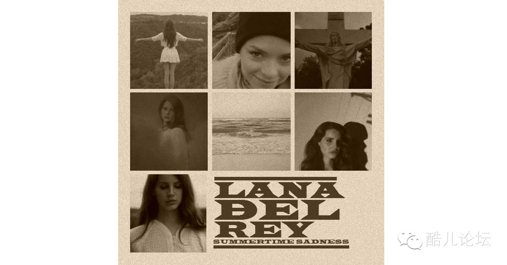
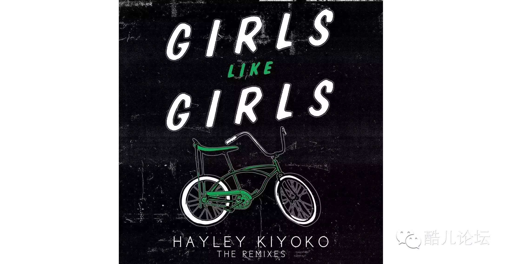
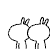
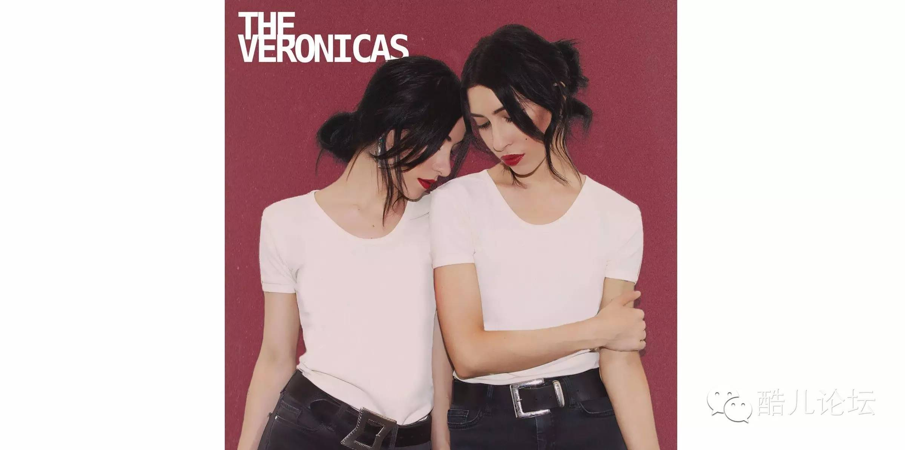

Les音乐 | 本来我是悲壮的赴死，现在踩着小碎步跳入棺材
（想写这个主要是经常看到有谈到性少数群体或者同性恋的时候，往往会出现Gay代替match了其他群体的情况。最近也看到Gay看不到不关心其他群体的现象，所以写这么一篇Les音乐希望大家能看到L也是同样重要的一部分。）（应该还会有Trans的音乐推送，如果我找的到足够多的Trans的歌的话……
你们以为我会推荐I kissed a girl这样人尽皆知的歌嘛口亨
01


Lana Del Rey - Summertime sadness
（这首也差不多 人 尽 皆 知 了（白眼
这首歌的MV中红衣的女子从暮色中的大桥上一跃而下如同摔碎的祭红瓷，白衣的Lana如耶稣张开双臂拥抱面前万家灯火和万丈悬崖。讲述了两位女同性恋人的爱情悲剧。
第一次听到这首歌就无法自拔地爱上了，一直到今天都是可以循环播放不厌倦的，时不时还会哼唱两句。这首歌即使听了无数遍原版，却还是更喜欢后来听到的radio mix edition，加入了轻快的鼓点，给人一种“本来我是悲壮的赴死，现在踩着小碎步跳入棺材”的感觉。

02

Hayley Kiyoko - Girls like girls
之前看到有文章说女性天生就没有100%Straight，至少也是Bisexual，不论这个研究结果是否属实，在生活中，比起男生，我们确实更能接受女生之间的亲密行为。（貌似只有中国如此，最近看了一部百合日剧transit girls（强推！！！）讲到日本女生之间只有恋人是会牵手的）
在这首歌的MV中，两个闺蜜一起抽烟，一起舞蹈，为对方搭配合适的衣服，一起美甲，在泳池里嬉戏，两人对对方的态度、看对方的眼神等各种细节都为后面的情节透露了线索。
反观男朋友对待女生的态度，拥抱时十分粗暴，抽烟和在泳池时都自顾自乐，派对时想到女朋友的时候就是想要骚扰她的时候（她对你的意义只有性吗excuse me？）。
喝得大醉，醒来看到女朋友和闺蜜举止亲密就恼羞成怒，甚至大打出手，然后数落起了女朋友。缓过神的闺蜜一下把战斗力只有5的男人打倒在地，还手都还不了。两人来不及擦掉血就相拥接吻，看得令人欣慰又心疼。画面切到闺蜜骑着车，与开头相呼应也解释了一开始闺蜜脸上带血的疑惑。
男人不了解不关心女人的感受，女人了解啊，谁还能比女人自己更懂女人呢？所以我觉得歌词可以改一改Girls like girls better than boys do.

 The Veronicas - If you love someone
The Veronicas - If you love someone
在这首歌中，除了Les，还涉及到了平权和环保等更多的主题。所以这里Love已经不局限于对于一个人的爱了，someone应该也不一定要是人吧
看MV！！！看MV！！！看MV！！！
You don’t have to be an activist to
WANT TOMAKE A CHANGE.
The duty of youth is to challengecorruption.
Be Kinder.
Only love and understanding can conquerfear.
Bullying. Hunger. War. Inequality.
Education is our most powerful weapon.
PROBLEM: ME. SOLUTION: WE.
It takes no compromise to give people theirrights.
Stand up for what you believe.
Find alternative media.
（以上是出现在MV中的字条）
P.S. Veronica是<<Chicago>>中与姐姐丈夫偷情被姐姐杀死的女人，不知道歌手是不是用这种典型的Bitch来标榜自己对于传统的叛逆和对自由的追求。（只知道这一个Veronica比较相关随便扯的Orz还有种阅读理解感233）

THE END & GOOD NIGHT
◆ ◆ ◆ ◆ ◆